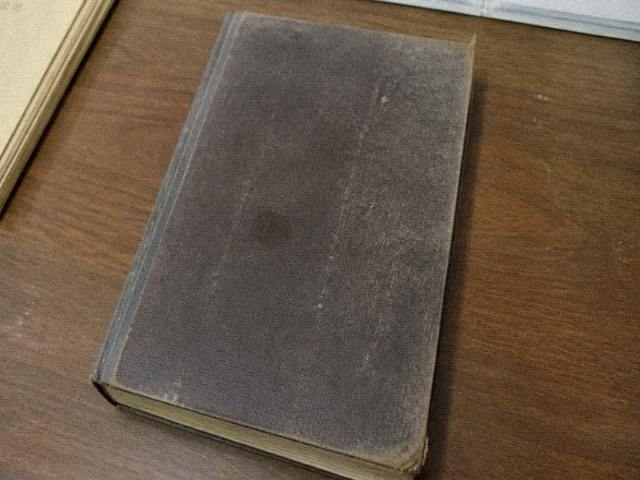

石桥好拍。戏台好拍。上场门不好拍，拍了有人出来挡。挡的人不是鬼，是检场。检场告假的晚上不知道谁挡。
攻略到此。别问退票。退票去文旅。文旅键是灰的就对了。
攻略帖是路人甲一一年九月发的。发完有人问检场告假那天谁挡镜头，他没回。本地老张后来在吃喝板顺便骂了一句拍照的，骂完斑竹给挪到这帖下面，算补充。
石桥好拍，五点前后，光从河对面过来，桥栏上的字能看清。戏台远景好拍，上场门不好拍，拍了有人出来挡。挡的人不是鬼，是检场。检场告假的晚上不知道谁挡。有人说程石自己出来挡，有人说没人挡，没人挡你也别把三脚架支到通道上，通道是员工走的，福生扫地扫到架子会骂，骂完还要你请烟。老郎牌在庙里，庙五点关门，五点以后别拍门缝，门缝里没牌，牌在龛上。闪光不行，乔干说过。三脚架在石板街上支，支了挡路，挡路有人让你收。攻略到此。别问退票。退票去文旅。文旅键是灰的就对了。有人要夜戏内场位置，内场不给游客。给了也不是你买的那张套票能进的。路人甲签名空着。空着他不补。一四年还有人私信问滤镜，滤镜这帖不管。不管就是不管。河对面杨树五点会挡住一半桥，等十分钟光又回来，回来那几分钟能拍到栏上的字。字是谁刻的这帖不考据。员工通道别支三脚架。检场告假你也别支。支了福生骂完还要烟，烟是黄果树，没有他不让路。不让路就收架子去石桥。石桥那头没戏，才能拍。